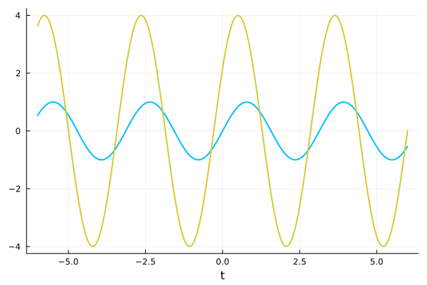

Plate Motions
The motion of a plate is specified through two data types:
RigidBodyMotionis the type that should be used to represent the plate's velocity. For example, inadvect!(plate₊, plate₋, platevel, Δt),platevelis of typeRigidBodyMotion.It contains the most current values(ċ, c̈, α̇)(the plate's centroid velocity and acceleration, and angular velocity, respectively), as well as aKinematicstype.Kinematicsis an abstract type representing a function that takes in a time and returns(ċ, c̈, α̇)
Motion
By default, RigidBodyMotion assumes a constant translational and angular velocity. For example,
julia> motion = Plates.RigidBodyMotion(1.0im, π/2)
Rigid Body Motion:
ċ = 0.0 + 1.0im
c̈ = 0.0 + 0.0im
α̇ = 1.57
α̈ = 0.0
Constant (ċ = 0.0 + 1.0im, α̇ = 1.5707963267948966)Here, Constant is a subtype of Kinematics that returns the same (ċ, c̈, α̇) triple at all times
julia> motion.kin.([0.0, 1.0, 2.0])
3-element Vector{Tuple{ComplexF64, ComplexF64, Float64, Float64}}:
(0.0 + 1.0im, 0.0 + 0.0im, 1.5707963267948966, 0.0)
(0.0 + 1.0im, 0.0 + 0.0im, 1.5707963267948966, 0.0)
(0.0 + 1.0im, 0.0 + 0.0im, 1.5707963267948966, 0.0)
Calling Plates.RigidBodyMotion(1.0im, π/2) is equivalent doing
kin = Plates.RigidBodyMotions.Constant(1.0im, π/2)
motion = Plates.RigidBodyMotion(1.0im, 0.0im, π/2, 0.0, kin)
# output
Rigid Body Motion:
ċ = 0.0 + 1.0im
c̈ = 0.0 + 0.0im
α̇ = 1.57
α̈ = 0.0
Constant (ċ = 0.0 + 1.0im, α̇ = 1.5707963267948966)The next section describes how to construct more interesting kinematics.
Kinematics
The Kinematics type is just an abstract type for functions that take in time and return the (ċ, c̈, α̇) triple. Let's create a MyMotion type that describes a horizontally translating plate that also sinusoidally pitches about its centroid.
import PotentialFlow.Plates.RigidBodyMotions: Kinematics
struct MyMotion <: Kinematics
U₀::ComplexF64
ω::Float64
end
(m::MyMotion)(t) = (m.U₀, 0.0im, sin(m.ω*t))
sinusoid = MyMotion(1.0, π/4)
# output
MyMotion(1.0 + 0.0im, 0.7853981633974483)We can then evaluate sinusoid at different times
julia> sinusoid.([0.0, 1.0, 2.0])
3-element Vector{Tuple{ComplexF64, ComplexF64, Float64}}:
(1.0 + 0.0im, 0.0 + 0.0im, 0.0)
(1.0 + 0.0im, 0.0 + 0.0im, 0.7071067811865475)
(1.0 + 0.0im, 0.0 + 0.0im, 1.0)
Profiles
To make defining complex kinematics a little eaiser, the library also provides a Profile type, an abstract type for real-valued functions of time. Before going into how to define new profiles, we'll first show an example of why we might want to represent functions as a type. We start off with a predefined profile, a smooth ramp:
using Plots
using PotentialFlow.Plates.RigidBodyMotions
ramp = RigidBodyMotions.EldredgeRamp(6)
T = range(-1, 4, length=200)
plot(T, ramp.(T), xlabel = "t", ylabel="Smoothed Ramp",
legend = :none, linewidth = 2)Now suppose we want to scale the ramp and shift it
shifted_ramp = -(ramp >> 2)
plot(T, shifted_ramp.(T), xlabel = "t", ylabel="Smoothed Ramp",
legend = :none, linewidth = 2, size=(600,300))then take its derivative
ddt_ramp = d_dt(shifted_ramp)
plot(T, ddt_ramp.(T), xlabel = "t", ylabel="Smoothed Ramp",
legend = :none, linewidth = 2, size = (600, 200))
We see that wrapping these functions in a type allows us to operate on them as if they values, making it easier to compose multiple motions together:
ps_ramp = RigidBodyMotions.ColoniusRamp(5)
composed_ramp = ramp - (ps_ramp >> 2)
plot(T, composed_ramp.(T), xlabel = "t", ylabel="Smoothed Ramp",
legend = :none, linewidth = 2, size = (600, 300))Defining a profile
Defining a profile is done in two steps:
- Create a subtype of
RigidBodyMotions.Profilethat contains the relavant parameters, e.g. - Add a method on the type (see Function like objects)
For example,
using PotentialFlow.Plates.RigidBodyMotions
struct Sinusoid <: RigidBodyMotions.Profile
ω::Float64
end
(s::Sinusoid)(t) = sin(s.ω*t)which can then be used as follows:
T = range(-6, 6, length = 200)
s = Sinusoid(2.0)
c = d_dt(2s >> 0.5)
using Plots
plot(T, [s.(T) c.(T)], xlabel = "t", color = ["#00BFFF" "#D4CA3A"],
legend = :none, linewidth = 2)
Function Documentation
PotentialFlow.RigidBodyMotions.ConstantProfile — TypeConstantProfile(c::Number)Create a profile consisting of a constant c.
Example
julia> p = RigidBodyMotions.ConstantProfile(1.0)
Constant (1.0)PotentialFlow.RigidBodyMotions.Kinematics — TypeAn abstract type for types that takes in time and returns (ċ, c̈, α̇).
PotentialFlow.RigidBodyMotions.PitchHeave — TypePitchHeave <: KinematicsKinematics describing an oscillatory pitching and heaving (i.e. plunging) motion
Constructors
Fields
U₀: Freestream velocitya: Axis of pitch rotation, relative to the plate centroidK: Reduced frequency $K = \frac{\Omega c}{2U_0}$ϕ: Phase lag of pitch to heave (in radians)α₀: Mean angle of attackΔα: Amplitude of pitchingA: Amplitude of translational heavingYẎŸαα̇α̈
PotentialFlow.RigidBodyMotions.Pitchup — TypePitchup <: KinematicsKinematics describing a pitchup motion (horizontal translation with rotation)
Constructors
Fields
U₀: Freestream velocitya: Axis of rotation, relative to the plate centroidK: Non-dimensional pitch rate $K = \dot{\alpha}_0\frac{c}{2U_0}$α₀: Initial angle of attackt₀: Nominal start of pitch upΔα: Total pitching angleαα̇α̈
PotentialFlow.RigidBodyMotions.Profile — TypeAn abstract type for real-valued functions of time.
PotentialFlow.RigidBodyMotions.RigidBodyMotion — TypeRigidBodyMotionA type to store the plate's current kinematics
Fields
ċ: current centroid velocityc̈: current centroid accelerationα̇: current angular velocityα̈: current angular accelerationkin: aKinematicsstructure
The first four fields are meant as a cache of the current kinematics while the kin field can be used to find the plate kinematics at any time.
Base.:* — Methods::Number * p::ProfileReturns a scaled profile with (s*p)(t) = s*p(t)
Example
julia> s = RigidBodyMotions.Sinusoid(π)
Sinusoid (ω = 3.14)
julia> 2s
2 × (Sinusoid (ω = 3.14))
julia> (2s).([0.0, 0.5, 0.75])
3-element Array{Float64,1}:
0.0
2.0
1.4142135623730951
Base.:+ — Methodp₁::Profile + p₂::ProfileAdd the profiles so that (p₁ + p₂)(t) = p₁(t) + p₂(t).
Examples
julia> ramp₁ = RigidBodyMotions.EldredgeRamp(5)
logcosh ramp (aₛ = 5.0)
julia> ramp₂ = RigidBodyMotions.ColoniusRamp(5)
power series ramp (n = 5.0)
julia> ramp₁ + ramp₂
AddedProfiles:
logcosh ramp (aₛ = 5.0)
power series ramp (n = 5.0)
julia> ramp₁ + (ramp₂ + ramp₁) == ramp₁ + ramp₂ + ramp₁
true
Base.:- — Method-(p₁::Profile, p₂::Profile)julia> s = RigidBodyMotions.Sinusoid(π)
Sinusoid (ω = 3.14)
julia> 2s
2 × (Sinusoid (ω = 3.14))
julia> (2s).([0.0, 0.5, 0.75])
3-element Array{Float64,1}:
0.0
2.0
1.4142135623730951
julia> s = RigidBodyMotions.Sinusoid(π);
julia> s.([0.0, 0.5, 0.75])
3-element Array{Float64,1}:
0.0
1.0
0.7071067811865476
julia> (-s).([0.0, 0.5, 0.75])
3-element Array{Float64,1}:
-0.0
-1.0
-0.7071067811865476
julia> (s - s).([0.0, 0.5, 0.75])
3-element Array{Float64,1}:
0.0
0.0
0.0Base.:>> — Methodp::Profile >> Δt::NumberShift the profile in time so that (p >> Δt)(t) = p(t - Δt)
Example
julia> s = RigidBodyMotions.Sinusoid(π);
julia> s >> 0.5
Sinusoid (ω = 3.14) >> 0.5
julia> (s >> 0.5).([0.0, 0.5, 0.75])
3-element Array{Float64,1}:
-1.0
0.0
0.7071067811865475
julia> (s << 0.5).([0.0, 0.5, 0.75])
3-element Array{Float64,1}:
1.0
1.2246467991473532e-16
-0.7071067811865475
PotentialFlow.RigidBodyMotions.d_dt — Methodd_dt(p::Profile)Take the time derivative of p and return it as a new profile.
Example
julia> s = RigidBodyMotions.Sinusoid(π)
Sinusoid (ω = 3.14)
julia> s.([0.0, 0.5, 0.75])
3-element Array{Float64,1}:
0.0
1.0
0.7071067811865476
julia> c = RigidBodyMotions.d_dt(s)
d/dt (Sinusoid (ω = 3.14))
julia> c.([0.0, 0.5, 0.75])
3-element Array{Float64,1}:
3.141592653589793
1.9236706937217898e-16
-2.221441469079183
Index
PotentialFlow.RigidBodyMotions.ConstantProfilePotentialFlow.RigidBodyMotions.KinematicsPotentialFlow.RigidBodyMotions.PitchHeavePotentialFlow.RigidBodyMotions.PitchupPotentialFlow.RigidBodyMotions.ProfilePotentialFlow.RigidBodyMotions.RigidBodyMotionBase.:*Base.:+Base.:-Base.:>>PotentialFlow.RigidBodyMotions.d_dt